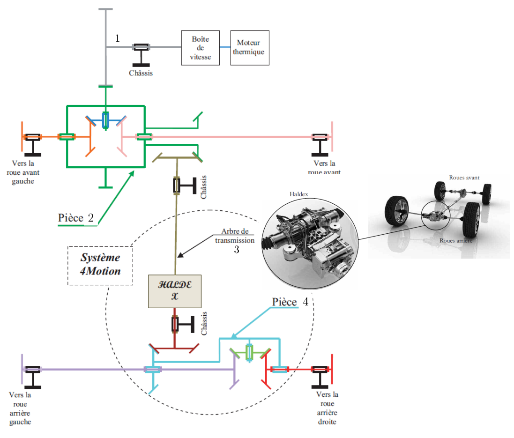
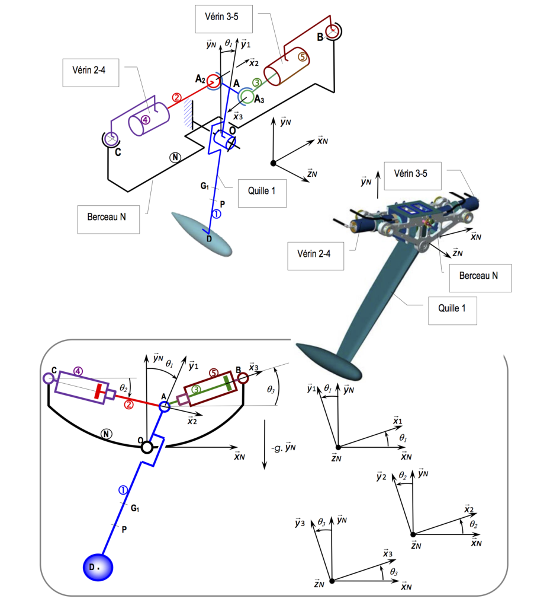

Prépa DS SI : Dynamique, Énergétique et QCM Capteurs
DS de 2 h : environ 10 min de QCM sur le chapitre 5, puis 2 exercices, dont un sur un mécanisme de la vie courante. Le QCM et les schémas test sont rédigés pour ce site : ce ne sont pas des sujets du professeur.
Plan pour les 2 h
| Temps | Quoi faire |
|---|---|
| 10 min | QCM. Au barème du DS01 du 17/10/2026, une bonne réponse vaut +1, une fausse −1, une absence 0 : on ne répond pas au hasard. |
| 5 min | Lire les deux exercices et repérer chaque pièce sur les schémas. |
| 2 × 50 min | Les deux exercices. |
| 5 min | Relire : unités, signes, résultats encadrés. |
QCM test sur le chapitre 5 (10 min)
20 questions, une seule bonne réponse. Barème : +1 / −1 / 0, note ramenée à zéro si elle est négative. Cours du chapitre 5.
10:00
Schémas test (exercices maison)
On cherche sur feuille avant d'ouvrir la correction.
M = 300 kg, Rp = 40 mm, réducteur r = ω2/ωm = 1/50. Rotor : Jm = 2·10⁻⁴ kg·m². Pignon avec la sortie du réducteur : J2 = 0,01 kg·m². Résistance au roulement F = 120 N. Rendement 1, sol horizontal.
1) Donner les liaisons et la relation entre V et ωm.
Voir la correction
- 0-1 : pivot (rotor).
- 0-2 : pivot.
- 0-3 : glissière.
- 2-3 : engrènement pignon-crémaillère.
- 1-2 : réducteur.
Étape 1 : Non-glissement entre pignon et crémaillère
\[V=R_p\,\omega_2\]
Étape 2 : Réducteur
\[\omega_2=r\,\omega_m\]
2) Déterminer l'inertie équivalente ramenée à l'arbre moteur.
Voir la correction
Étape 1 : Somme des énergies
\[E_c=\tfrac12J_m\omega_m^2+\tfrac12J_2\omega_2^2+\tfrac12MV^2\]
Étape 2 : Tout en fonction de ωm
\[J_{eq}=J_m+r^2\left(J_2+MR_p^2\right)\]
3) Le portail accélère à 0,25 m/s². Calculer le couple moteur.
Voir la correction
Étape 1 : Puissances
\[P_{ext}=-F\,V \qquad P_{int}=C_m\,\omega_m\]
Étape 2 : Dériver puis simplifier par ωm
\[C_m=J_{eq}\,\dot\omega_m+F\,R_p\,r\]
Étape 3 : Application numérique
\[\dot\omega_m=\dfrac{0{,}25}{8\cdot10^{-4}}=312{,}5\ \text{rad/s}^2\]
Voiturette : masse totale M = 800 kg, rayon des roues R = 0,30 m. Quatre roues de J = 0,8 kg·m² chacune, arbre compris. Boîtier : J2 = 0,05 kg·m². Arbre moteur : J1 = 0,03 kg·m². Satellites négligés. Pente montante de 8 %, accélération de 1,5 m/s², roulement sans glissement. Rendement 1.
1) Numéroter les pièces (une par couleur) et donner leurs liaisons.
Voir la correction
- Gris, pièce 1 : arbre moteur et pignon ; pivot avec le bâti 0.
- Vert, pièce 2 : couronne et boîtier ; pivots avec 4 et avec 5 ; engrenage avec 1.
- Bleu, 3 et 3' : satellites ; pivot avec 2 ; engrenages coniques avec 4 et 5.
- Orange, pièce 4 : arbre et roue gauche ; pivot avec 0.
- Rose, pièce 5 : arbre et roue droite ; pivot avec 0.
2) En ligne droite, relier ω1 à la vitesse V.
Voir la correction
Les deux roues tournent à la même vitesse. Les satellites ne tournent donc pas par rapport au boîtier.
\[\omega_4=\omega_5=\omega_2=\omega=\dfrac{V}{R}\]
\[\left|\dfrac{\omega_2}{\omega_1}\right|=\dfrac{Z_1}{Z_2}=\dfrac{18}{72}=\dfrac14\]
3) Déterminer l'inertie équivalente ramenée à l'axe des roues.
Voir la correction
Étape 1 : Énergie cinétique : translation, 4 roues, boîtier, moteur
\[J_{eq}=MR^2+4J+J_2+16\,J_1\]
4) Calculer le couple moteur C1.
Voir la correction
On compte les rotations positives dans le sens qui fait avancer ; pour le moteur, on prend son propre sens moteur.
Étape 1 : Puissances
\[P_{ext}=-Mg\sin\alpha\,R\,\omega \qquad P_{int}=C_1\cdot4\omega\]
Étape 2 : Théorème de l'énergie cinétique
\[4C_1=J_{eq}\,\dot\omega+MgR\sin\alpha\]
Étape 3 : Application numérique
\[\dot\omega=\dfrac{1{,}5}{0{,}30}=5\ \text{rad/s}^2 \qquad \alpha=\arctan(0{,}08)=4{,}57^\circ\]
5) En virage, la roue gauche tourne à 10 rad/s et la droite à 14 rad/s. Trouver ω2 et ω1.
Voir la correction
1) Donner les liaisons du mécanisme plan.
Voir la correction
- 0-1 : pivot en O.
- 0-3 : pivot en B.
- 3-2 : glissière suivant (BA).
- 2-1 : pivot en A.
Une seule mobilité.
2) Exprimer la longueur λ = BA en fonction de θ.
Voir la correction
Étape 1 : Fermeture géométrique
\[\overrightarrow{BA}=\overrightarrow{BO}+\overrightarrow{OA}=b\,\vec y+a(\cos\theta\,\vec x+\sin\theta\,\vec y)\]
Étape 2 : Norme au carré
3) Donner la relation entre les vitesses, puis la course du vérin de θ = 0° à 60°.
Voir la correction
Étape 1 : Dériver
Étape 2 : Course
\[\lambda(0^\circ)=0{,}583\ \text{m} \qquad \lambda(60^\circ)=0{,}774\ \text{m}\]
4) En mouvement très lent, déterminer l'effort F du vérin (liaisons parfaites, masses du vérin négligées).
Voir la correction
Étape 1 : Énergie cinétique négligée : la somme des puissances est nulle
\[F\,\dot\lambda-mgL\cos\theta\,\dot\theta=0\]
Étape 2 : Remplacer la vitesse du vérin
Exercices du site Bigeard à revoir (thématique Dynamique)
Priorité 1 : le schéma en couleur
C'est un pari, pas une information du professeur. Parmi les énoncés de la thématique Dynamique (survolés en vignettes), l'Audi 4Motion a le schéma en couleur qui paraît le plus difficile à lire.
1. Transmission de puissance Audi 4Motion

| Couleur | Pièce |
|---|---|
| gris | arbre 1, sortie de la boîte de vitesse |
| vert foncé | pièce 2 : boîtier du différentiel avant, sa couronne et la roue conique qui entraîne l'arbre 3 |
| bleu foncé | satellites avant |
| orange / rose | arbres des roues avant gauche / droite |
| kaki | arbre de transmission 3 |
| bloc Haldex puis rouge foncé | coupleur (supposé bloqué) puis pignon vers l'arrière |
| cyan | pièce 4 : boîtier du différentiel arrière |
| vert clair | satellites arrière |
| violet / rouge vif | arbres des roues arrière gauche / droite |
La clé de l'exercice : en ligne droite, les satellites ne tournent pas par rapport à leur boîtier. Le différentiel tourne en bloc. Le corrigé obtient \(\omega_2=\omega_3=\omega_4=\omega\) et \(\omega_1=-\omega\).
2. Quille pendulaire (autre candidat en couleur)

Noir : berceau N. Bleu : quille 1. Rouge : tige 2 dans le corps violet 4. Vert : tige 3 dans le corps rouge foncé 5. On commence par le modèle 2D du bas : des pivots sur le berceau et sur la quille, deux glissières pour les vérins.
À savoir refaire : vitesses, énergies cinétiques, puissances, puis puissance du vérin moteur par le théorème de l'énergie cinétique.
Priorité 2 : mécanisme de la vie courante
3. Survitesse d'ascenseur
Très complet : moment dynamique d'un balancier (avec matrice d'inertie), puis inertie d'un volant par le théorème de l'énergie cinétique. Il contient aussi une vue en couleur du limiteur de vitesse.
4. Roue autonome pour fauteuil roulant
Format court, qui tient bien dans un DS : actions mécaniques, PFD en montée, limite d'adhérence (Coulomb), moment dynamique sur la roue, risque de basculement.
5. Chariot élévateur à bateaux
Moins « vie courante », mais ses schémas sont en couleur : chaîne et pignon, puis vérin d'inclinaison. Bon entraînement au théorème de l'énergie cinétique.
Priorité 3 : entretien de la méthode
Appontage sur le Charles de Gaulle et IARES sont tombés au DS02 du 22/11/2025. Je suppose qu'ils ont moins de chances de revenir tels quels, mais ils montrent le niveau et la rédaction attendus.
Déjà faits en TD, à revoir : lecteur de DVD, régulateur centrifuge, équilibreuse et énergie cinétique, inertie équivalente, puissance.